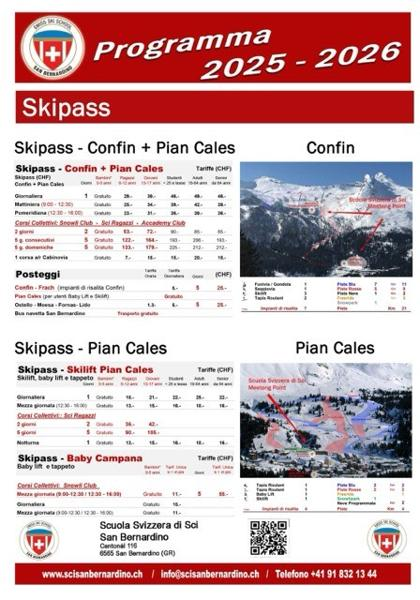
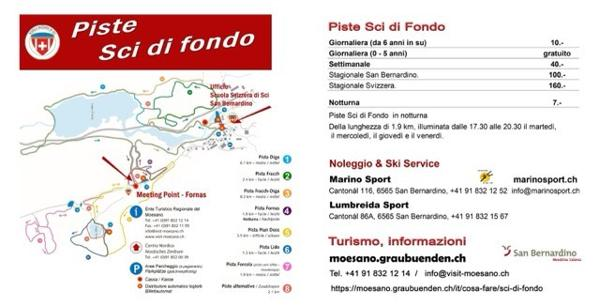

Info
Tutto quello che serve sapere sulla scuola, sugli impianti di Pian Cales e Confin, sulle piste di fondo e sulle escursioni invernali.
Chi siamo
Con oltre 200 scuole e 10'000 affiliati suddivisi in maestri di sci, sci di fondo, telemark e snowboard, la Scuola Svizzera di Sci offre la possibilità di apprendere le nozioni per la pratica di questo magnifico sport. L'associazione si prefigge di perfezionare, ma soprattutto di sviluppare, la formazione di base e continua dei maestri e la commercializzazione degli sport sulla neve.
Scuola Svizzera di Sci San Bernardino
Per tutta la stagione invernale, di regola da inizio dicembre fino a Pasqua, impartiamo a dipendenza del periodo corsi collettivi e lezioni private tutti i giorni. La scuola dispone di una trentina di maestri, identificabili nella classica divisa blu con strisce gialle.
Pian Cales · 1626 m
Il primo campo scuola per sci, snowboard e telemark si trova nel paese di San Bernardino, ideale per principianti e famiglie. Pista omologata FIS per gare internazionali.
Confin · 2500 m
Per chi desidera sciare in un comprensorio più ampio, raggiungibile direttamente con l'automobile. Perfetto per perfezionarsi e per il fuori pista.
Fornas · Sci di fondo
Corsi e lezioni private di fondo si svolgono in prevalenza in zona Fornas: ideale per la tecnica classica e lo skating, con pista illuminata fino a tarda sera.
La scoperta degli sport sulla neve
Suddivisa nei livelli Swiss Snow League e Swiss Snow Academy. Le zone sono particolarmente adatte sia per principianti, sia per esperti sciatori e snowboarder che desiderano perfezionare la competizione: la scuola dispone infatti di una pista omologata per lo svolgimento di gare internazionali (FIS), senza naturalmente tralasciare il fuori pista.
Assicurazioni. La Scuola Svizzera di Sci e Snowboard declina ogni responsabilità in caso di danni o incidente durante l'insegnamento, le escursioni, i test, le gare ed altro. Ogni allievo deve essere assicurato personalmente.
* Le lezioni vengono rimborsate solo se annullate 24 ore prima.

Federico Toscano — Swiss Ski
Prospetto della scuola


Sci Pian Cales e Confin
Tariffe degli impianti di risalita (CHF). Bambini 0–5 anni gratuito.
| Skipass | Giorni | Ragazzi 6–12 | Giovani 13–17 | Studenti <25 | Adulti 18–64 | Senior 64+ |
|---|---|---|---|---|---|---|
| Giornaliera | 1 | 29.– | 39.– | 46.– | 49.– | 46.– |
| Mattiniera (9:00–12:30) | 1 | 25.– | 34.– | 39.– | 42.– | 39.– |
| Pomeridiana (12:30–16:00) | 1 | 23.– | 31.– | 36.– | 39.– | 36.– |
| Corsi collettivi: Snowli Club · Sci Ragazzi · Academy Club | ||||||
| 2 giorni | 2 | 53.– | 72.– | 90.– | 85.– | 85.– |
| 5 g. consecutivi | 5 | 122.– | 164.– | 193.– | 206.– | 193.– |
| 5 g. domeniche | 5 | 133.– | 179.– | 225.– | 212.– | 212.– |
| 1 corsa a/r cabinovia | — | 7.– | 15.– | 15.– | 20.– | 15.– |
Confin
- 1 funivia / gondola
- 1 seggiovia
- 3 skilift
- 2 tapis roulant
- Piste blu 11 km
- Piste rosse 8 km
- Piste nere 2 km
- Freeride 5 km
- Snowpark
Meeting point scuola: Frach partenza cabine e Confin 2000 di fronte al ristorante.
| Skilift, baby lift e tappeto | Giorni | Ragazzi | Giovani | Studenti | Adulti | Senior |
|---|---|---|---|---|---|---|
| Giornaliera | 1 | 18.– | 21.– | 22.– | 25.– | 22.– |
| Mezza giornata (12:30–16:00) | 1 | 13.– | 15.– | 16.– | 18.– | 16.– |
| Corsi collettivi: Sci Ragazzi | ||||||
| 2 giorni | 2 | 36.– | 42.– | — | — | — |
| 5 giorni | 5 | 90.– | 105.– | — | — | — |
| Notturna | 1 | 13.– | 15.– | 16.– | 18.– | 16.– |
Pian Cales
- 2 tapis roulant
- 1 baby lift
- 1 skilift
- Piste blu 2 km
- Piste rosse 2 km
- Freeride
- Snowpark
- Neve programmata
Meeting point scuola: Baby lift Campana.
| Baby lift e tappeto | Bambini 0–5 | Tariffa unica 6+ | Giorni | Tariffa unica 6+ |
|---|---|---|---|---|
| Corsi collettivi: Snowli Club | ||||
| Mezza giornata (9:00–12:30 / 12:30–16:00) | Gratuito | 11.– | 5 | 55.– |
| Giornaliera | Gratuito | 15.– | — | — |
| Mezza giornata (9:00–12:30 / 12:30–16:00) | Gratuito | 11.– | — | — |
| Posteggi | Tariffa oraria | Giornaliera | Giorni | CHF |
|---|---|---|---|---|
| Confin – Frach (impianti di risalita Confin) | — | 5.– | 5 | 25.– |
| Pian Cales (per utenti Baby Lift e Skilift) | Gratuito | |||
| Ostello – Moesa – Fornas – Lido | 1.3– | 5.– | 5 | 25.– |
| Bus navetta San Bernardino | Trasporto gratuito | |||


Skipass 50% con la scuola
Al momento dell'acquisto dello skipass, dichiarando di frequentare una lezione con la nostra scuola e mostrando la conferma della prenotazione, si ottiene una riduzione del 50% sul prezzo dello skipass.
Tariffe indicative stagione 2025 – 2026. Fanno stato i prezzi esposti alle casse degli impianti.
Apri volantinoPiste sci di fondo
Meeting point della scuola: cassa pista sci di fondo Fornas e ufficio Scuola Svizzera di Sci / Marino Sport in paese.


Informazioni
Ente Turistico Regionale del Moesano
Tel. +41 (0)91 832 12 14 · visit-moesano.ch
Centro Nordico — Tel. +41 (0)91 832 00 39
Cassa e distributore automatico biglietti a Fornas.
Escursioni / Sentieri invernali
Escursioni con ciaspole per adulti e ragazzi a partire dai 12 anni. Quotidianamente, durante la stagione, a San Bernardino e a Splügen dalle 09:00 alle 16:00, da prenotare in anticipo. L'orario può variare a dipendenza della disponibilità dei maestri. Eventuale annullamento da effettuare 48 ore prima.
RitrovoUfficio Scuola Svizzera di Sci – Marino Sport, San Bernardino paese
| 1 lezione (55 min.), 1 persona | 80.– |
| 1 doppia lezione (115 min.), 1 persona | 160.– |
| 2 o 3 persone in più (max 3) pagano all'ora | 10.– |
| Noleggio ciaspole (Marino Sport) | 20.– |
Principianti
Prima esperienza con racchette da neve. Rispetto dell'ambiente boschivo.
Avanzati
Tecnica di base: passo alternato, salite, discese. Passeggiate oltre il livello boschivo.

Marino Sport
Cantonál 116, 6565 San Bernardino · Tel. +41 91 832 12 52 · info@marinosport.ch